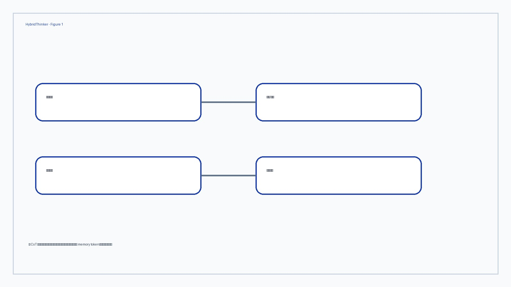
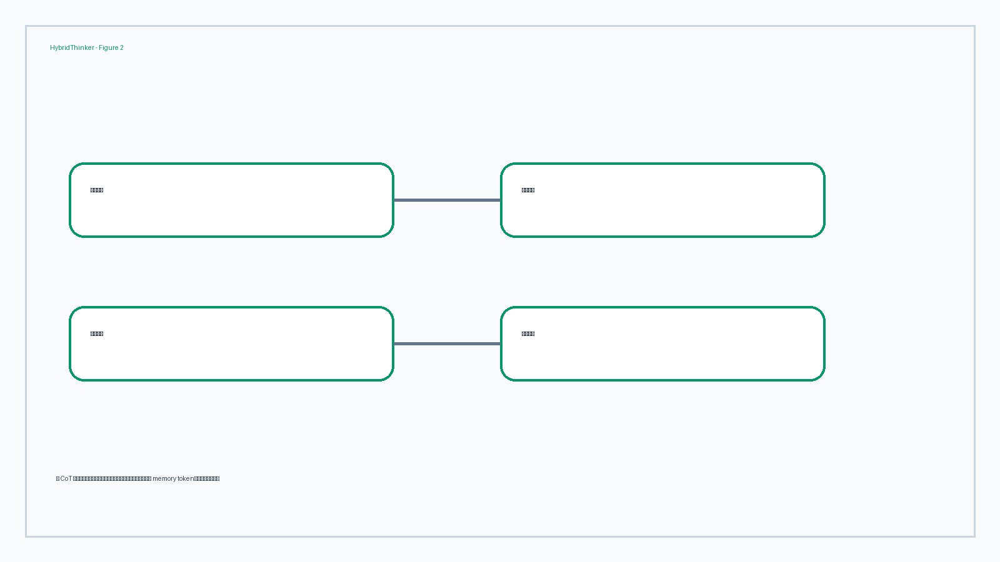
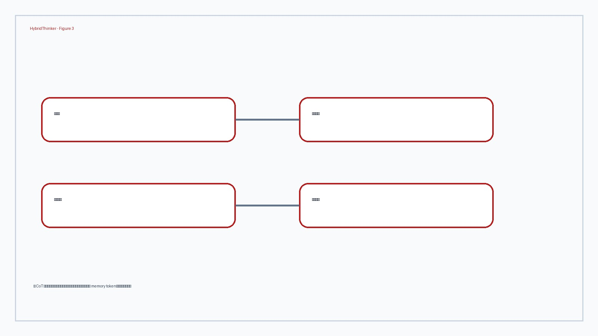

HybridThinker 这篇论文的唯一论文入口是 arXiv:2606.03768，标题为 “HybridThinker: Efficient Chain-of-Thought Reasoning via Compressed Memory and Transient Thought Steps”。作者包括 Xin Liu, Runsong Zhao, Xinyu Liu, Junhao Ruan, Pengcheng Huang, Shichao Dong, Chunyang Xiao, Chenglong Wang, Changliang Li, Jingbo Zhu, Tong Xiao；一作主机构按本轮页面和作者信息暂记为 Northeastern University。代码/项目页状态：本轮只核验 arXiv 页面和 PDF，没有把未打开的二级链接写成独立事实来源。主类别为 LLM；公开日期按 arXiv 页面记录为 2026-06-02。
1. 背景和问题
HybridThinker 在“问题定义与历史缺口”这一层的关键，是重新规定系统里哪些变量必须显式暴露。第 1 个观察点是：compressed memory tokens 只有放在 压缩记忆 token 与临时思考步骤结合的高效推理 的上下文里才有意义。若把它抽离成单点技巧，就会忽略作者真正处理的约束：训练信号来自哪里、推理状态如何演化、成本由哪个环节承担、评估指标是否能代表用户或任务目标。对推荐系统来说，这通常对应召回覆盖、排序目标、用户历史密度和线上反馈延迟；对 LLM 来说，则对应推理预算、奖励可验证性、上下文可访问性和生成连续性。
HybridThinker 在“问题定义与历史缺口”这一层的关键，是重新规定系统里哪些变量必须显式暴露。第 2 个观察点是：transient thought steps 只有放在 压缩记忆 token 与临时思考步骤结合的高效推理 的上下文里才有意义。若把它抽离成单点技巧，就会忽略作者真正处理的约束：训练信号来自哪里、推理状态如何演化、成本由哪个环节承担、评估指标是否能代表用户或任务目标。对推荐系统来说，这通常对应召回覆盖、排序目标、用户历史密度和线上反馈延迟；对 LLM 来说，则对应推理预算、奖励可验证性、上下文可访问性和生成连续性。
HybridThinker 在“问题定义与历史缺口”这一层的关键，是重新规定系统里哪些变量必须显式暴露。第 3 个观察点是：hybrid training scheme 只有放在 压缩记忆 token 与临时思考步骤结合的高效推理 的上下文里才有意义。若把它抽离成单点技巧，就会忽略作者真正处理的约束：训练信号来自哪里、推理状态如何演化、成本由哪个环节承担、评估指标是否能代表用户或任务目标。对推荐系统来说，这通常对应召回覆盖、排序目标、用户历史密度和线上反馈延迟；对 LLM 来说，则对应推理预算、奖励可验证性、上下文可访问性和生成连续性。
HybridThinker 在“问题定义与历史缺口”这一层的关键，是重新规定系统里哪些变量必须显式暴露。第 4 个观察点是：attention accessibility control 只有放在 压缩记忆 token 与临时思考步骤结合的高效推理 的上下文里才有意义。若把它抽离成单点技巧，就会忽略作者真正处理的约束：训练信号来自哪里、推理状态如何演化、成本由哪个环节承担、评估指标是否能代表用户或任务目标。对推荐系统来说，这通常对应召回覆盖、排序目标、用户历史密度和线上反馈延迟；对 LLM 来说，则对应推理预算、奖励可验证性、上下文可访问性和生成连续性。
HybridThinker 在“问题定义与历史缺口”这一层的关键，是重新规定系统里哪些变量必须显式暴露。第 5 个观察点是：compressed memory tokens 只有放在 压缩记忆 token 与临时思考步骤结合的高效推理 的上下文里才有意义。若把它抽离成单点技巧，就会忽略作者真正处理的约束：训练信号来自哪里、推理状态如何演化、成本由哪个环节承担、评估指标是否能代表用户或任务目标。对推荐系统来说，这通常对应召回覆盖、排序目标、用户历史密度和线上反馈延迟；对 LLM 来说，则对应推理预算、奖励可验证性、上下文可访问性和生成连续性。
HybridThinker 在“问题定义与历史缺口”这一层的关键，是重新规定系统里哪些变量必须显式暴露。第 6 个观察点是：transient thought steps 只有放在 压缩记忆 token 与临时思考步骤结合的高效推理 的上下文里才有意义。若把它抽离成单点技巧，就会忽略作者真正处理的约束：训练信号来自哪里、推理状态如何演化、成本由哪个环节承担、评估指标是否能代表用户或任务目标。对推荐系统来说，这通常对应召回覆盖、排序目标、用户历史密度和线上反馈延迟；对 LLM 来说，则对应推理预算、奖励可验证性、上下文可访问性和生成连续性。
HybridThinker 在“问题定义与历史缺口”这一层的关键，是重新规定系统里哪些变量必须显式暴露。第 7 个观察点是：hybrid training scheme 只有放在 压缩记忆 token 与临时思考步骤结合的高效推理 的上下文里才有意义。若把它抽离成单点技巧，就会忽略作者真正处理的约束：训练信号来自哪里、推理状态如何演化、成本由哪个环节承担、评估指标是否能代表用户或任务目标。对推荐系统来说，这通常对应召回覆盖、排序目标、用户历史密度和线上反馈延迟；对 LLM 来说，则对应推理预算、奖励可验证性、上下文可访问性和生成连续性。
HybridThinker 在“问题定义与历史缺口”这一层的关键，是重新规定系统里哪些变量必须显式暴露。第 8 个观察点是：attention accessibility control 只有放在 压缩记忆 token 与临时思考步骤结合的高效推理 的上下文里才有意义。若把它抽离成单点技巧，就会忽略作者真正处理的约束：训练信号来自哪里、推理状态如何演化、成本由哪个环节承担、评估指标是否能代表用户或任务目标。对推荐系统来说，这通常对应召回覆盖、排序目标、用户历史密度和线上反馈延迟；对 LLM 来说，则对应推理预算、奖励可验证性、上下文可访问性和生成连续性。

Figure 1 把 HybridThinker 的阅读路线压成四个锚点：问题入口、关键机制、训练/推理链路和系统价值。它用于帮助读者先判断论文是不是解决真实系统缺口，再判断方法是否会改变现有接口。对今天的筛选来说，它把 CoT 压缩中的“记住摘要”和“保留细节”放到同一个训练机制里权衡。 这使它和历史库里已有的相邻论文形成差异，而不是重复覆盖同一类 LLM4Rec、RAG 或 CTR 工作。
2. 方法
2.1 输入对象与状态表示
HybridThinker 在“输入对象与状态表示”这一层的关键，是重新规定系统里哪些变量必须显式暴露。第 11 个观察点是：hybrid training scheme 只有放在 压缩记忆 token 与临时思考步骤结合的高效推理 的上下文里才有意义。若把它抽离成单点技巧，就会忽略作者真正处理的约束：训练信号来自哪里、推理状态如何演化、成本由哪个环节承担、评估指标是否能代表用户或任务目标。对推荐系统来说，这通常对应召回覆盖、排序目标、用户历史密度和线上反馈延迟；对 LLM 来说，则对应推理预算、奖励可验证性、上下文可访问性和生成连续性。
HybridThinker 在“输入对象与状态表示”这一层的关键，是重新规定系统里哪些变量必须显式暴露。第 12 个观察点是：attention accessibility control 只有放在 压缩记忆 token 与临时思考步骤结合的高效推理 的上下文里才有意义。若把它抽离成单点技巧，就会忽略作者真正处理的约束：训练信号来自哪里、推理状态如何演化、成本由哪个环节承担、评估指标是否能代表用户或任务目标。对推荐系统来说，这通常对应召回覆盖、排序目标、用户历史密度和线上反馈延迟；对 LLM 来说，则对应推理预算、奖励可验证性、上下文可访问性和生成连续性。
HybridThinker 在“输入对象与状态表示”这一层的关键，是重新规定系统里哪些变量必须显式暴露。第 13 个观察点是：compressed memory tokens 只有放在 压缩记忆 token 与临时思考步骤结合的高效推理 的上下文里才有意义。若把它抽离成单点技巧，就会忽略作者真正处理的约束：训练信号来自哪里、推理状态如何演化、成本由哪个环节承担、评估指标是否能代表用户或任务目标。对推荐系统来说，这通常对应召回覆盖、排序目标、用户历史密度和线上反馈延迟；对 LLM 来说，则对应推理预算、奖励可验证性、上下文可访问性和生成连续性。
HybridThinker 在“输入对象与状态表示”这一层的关键，是重新规定系统里哪些变量必须显式暴露。第 14 个观察点是：transient thought steps 只有放在 压缩记忆 token 与临时思考步骤结合的高效推理 的上下文里才有意义。若把它抽离成单点技巧，就会忽略作者真正处理的约束：训练信号来自哪里、推理状态如何演化、成本由哪个环节承担、评估指标是否能代表用户或任务目标。对推荐系统来说，这通常对应召回覆盖、排序目标、用户历史密度和线上反馈延迟；对 LLM 来说，则对应推理预算、奖励可验证性、上下文可访问性和生成连续性。
HybridThinker 在“输入对象与状态表示”这一层的关键，是重新规定系统里哪些变量必须显式暴露。第 15 个观察点是：hybrid training scheme 只有放在 压缩记忆 token 与临时思考步骤结合的高效推理 的上下文里才有意义。若把它抽离成单点技巧，就会忽略作者真正处理的约束：训练信号来自哪里、推理状态如何演化、成本由哪个环节承担、评估指标是否能代表用户或任务目标。对推荐系统来说，这通常对应召回覆盖、排序目标、用户历史密度和线上反馈延迟；对 LLM 来说，则对应推理预算、奖励可验证性、上下文可访问性和生成连续性。
HybridThinker 在“输入对象与状态表示”这一层的关键，是重新规定系统里哪些变量必须显式暴露。第 16 个观察点是：attention accessibility control 只有放在 压缩记忆 token 与临时思考步骤结合的高效推理 的上下文里才有意义。若把它抽离成单点技巧，就会忽略作者真正处理的约束：训练信号来自哪里、推理状态如何演化、成本由哪个环节承担、评估指标是否能代表用户或任务目标。对推荐系统来说，这通常对应召回覆盖、排序目标、用户历史密度和线上反馈延迟；对 LLM 来说，则对应推理预算、奖励可验证性、上下文可访问性和生成连续性。
HybridThinker 在“输入对象与状态表示”这一层的关键，是重新规定系统里哪些变量必须显式暴露。第 17 个观察点是：compressed memory tokens 只有放在 压缩记忆 token 与临时思考步骤结合的高效推理 的上下文里才有意义。若把它抽离成单点技巧，就会忽略作者真正处理的约束：训练信号来自哪里、推理状态如何演化、成本由哪个环节承担、评估指标是否能代表用户或任务目标。对推荐系统来说，这通常对应召回覆盖、排序目标、用户历史密度和线上反馈延迟；对 LLM 来说，则对应推理预算、奖励可验证性、上下文可访问性和生成连续性。
HybridThinker 在“输入对象与状态表示”这一层的关键，是重新规定系统里哪些变量必须显式暴露。第 18 个观察点是：transient thought steps 只有放在 压缩记忆 token 与临时思考步骤结合的高效推理 的上下文里才有意义。若把它抽离成单点技巧，就会忽略作者真正处理的约束：训练信号来自哪里、推理状态如何演化、成本由哪个环节承担、评估指标是否能代表用户或任务目标。对推荐系统来说，这通常对应召回覆盖、排序目标、用户历史密度和线上反馈延迟；对 LLM 来说，则对应推理预算、奖励可验证性、上下文可访问性和生成连续性。
从抽象目标看，可以把 HybridThinker 的优化写成：
符号解释：$S_{task}$ 表示主任务质量，$S_{control}$ 表示控制性、可信性或可学习性，$C_{serve}$ 表示训练与服务成本，$\alpha,\beta,\gamma$ 是不同部署阶段的权重。这个公式是本笔记的结构化抽象，不是论文原文逐字公式，用来说明论文在质量、控制和成本之间的权衡。
2.2 中间模块和信号传递
HybridThinker 在“中间模块和信号传递”这一层的关键，是重新规定系统里哪些变量必须显式暴露。第 21 个观察点是：compressed memory tokens 只有放在 压缩记忆 token 与临时思考步骤结合的高效推理 的上下文里才有意义。若把它抽离成单点技巧，就会忽略作者真正处理的约束：训练信号来自哪里、推理状态如何演化、成本由哪个环节承担、评估指标是否能代表用户或任务目标。对推荐系统来说，这通常对应召回覆盖、排序目标、用户历史密度和线上反馈延迟；对 LLM 来说，则对应推理预算、奖励可验证性、上下文可访问性和生成连续性。
HybridThinker 在“中间模块和信号传递”这一层的关键，是重新规定系统里哪些变量必须显式暴露。第 22 个观察点是：transient thought steps 只有放在 压缩记忆 token 与临时思考步骤结合的高效推理 的上下文里才有意义。若把它抽离成单点技巧，就会忽略作者真正处理的约束：训练信号来自哪里、推理状态如何演化、成本由哪个环节承担、评估指标是否能代表用户或任务目标。对推荐系统来说，这通常对应召回覆盖、排序目标、用户历史密度和线上反馈延迟；对 LLM 来说，则对应推理预算、奖励可验证性、上下文可访问性和生成连续性。
HybridThinker 在“中间模块和信号传递”这一层的关键，是重新规定系统里哪些变量必须显式暴露。第 23 个观察点是：hybrid training scheme 只有放在 压缩记忆 token 与临时思考步骤结合的高效推理 的上下文里才有意义。若把它抽离成单点技巧，就会忽略作者真正处理的约束：训练信号来自哪里、推理状态如何演化、成本由哪个环节承担、评估指标是否能代表用户或任务目标。对推荐系统来说，这通常对应召回覆盖、排序目标、用户历史密度和线上反馈延迟；对 LLM 来说，则对应推理预算、奖励可验证性、上下文可访问性和生成连续性。
HybridThinker 在“中间模块和信号传递”这一层的关键，是重新规定系统里哪些变量必须显式暴露。第 24 个观察点是：attention accessibility control 只有放在 压缩记忆 token 与临时思考步骤结合的高效推理 的上下文里才有意义。若把它抽离成单点技巧，就会忽略作者真正处理的约束：训练信号来自哪里、推理状态如何演化、成本由哪个环节承担、评估指标是否能代表用户或任务目标。对推荐系统来说，这通常对应召回覆盖、排序目标、用户历史密度和线上反馈延迟；对 LLM 来说，则对应推理预算、奖励可验证性、上下文可访问性和生成连续性。
HybridThinker 在“中间模块和信号传递”这一层的关键，是重新规定系统里哪些变量必须显式暴露。第 25 个观察点是：compressed memory tokens 只有放在 压缩记忆 token 与临时思考步骤结合的高效推理 的上下文里才有意义。若把它抽离成单点技巧，就会忽略作者真正处理的约束：训练信号来自哪里、推理状态如何演化、成本由哪个环节承担、评估指标是否能代表用户或任务目标。对推荐系统来说，这通常对应召回覆盖、排序目标、用户历史密度和线上反馈延迟；对 LLM 来说，则对应推理预算、奖励可验证性、上下文可访问性和生成连续性。
HybridThinker 在“中间模块和信号传递”这一层的关键，是重新规定系统里哪些变量必须显式暴露。第 26 个观察点是：transient thought steps 只有放在 压缩记忆 token 与临时思考步骤结合的高效推理 的上下文里才有意义。若把它抽离成单点技巧，就会忽略作者真正处理的约束：训练信号来自哪里、推理状态如何演化、成本由哪个环节承担、评估指标是否能代表用户或任务目标。对推荐系统来说，这通常对应召回覆盖、排序目标、用户历史密度和线上反馈延迟；对 LLM 来说，则对应推理预算、奖励可验证性、上下文可访问性和生成连续性。
HybridThinker 在“中间模块和信号传递”这一层的关键，是重新规定系统里哪些变量必须显式暴露。第 27 个观察点是：hybrid training scheme 只有放在 压缩记忆 token 与临时思考步骤结合的高效推理 的上下文里才有意义。若把它抽离成单点技巧，就会忽略作者真正处理的约束：训练信号来自哪里、推理状态如何演化、成本由哪个环节承担、评估指标是否能代表用户或任务目标。对推荐系统来说，这通常对应召回覆盖、排序目标、用户历史密度和线上反馈延迟；对 LLM 来说，则对应推理预算、奖励可验证性、上下文可访问性和生成连续性。
HybridThinker 在“中间模块和信号传递”这一层的关键，是重新规定系统里哪些变量必须显式暴露。第 28 个观察点是：attention accessibility control 只有放在 压缩记忆 token 与临时思考步骤结合的高效推理 的上下文里才有意义。若把它抽离成单点技巧，就会忽略作者真正处理的约束：训练信号来自哪里、推理状态如何演化、成本由哪个环节承担、评估指标是否能代表用户或任务目标。对推荐系统来说，这通常对应召回覆盖、排序目标、用户历史密度和线上反馈延迟；对 LLM 来说，则对应推理预算、奖励可验证性、上下文可访问性和生成连续性。
从抽象目标看，可以把 HybridThinker 的优化写成：
符号解释：$S_{task}$ 表示主任务质量，$S_{control}$ 表示控制性、可信性或可学习性，$C_{serve}$ 表示训练与服务成本，$\alpha,\beta,\gamma$ 是不同部署阶段的权重。这个公式是本笔记的结构化抽象，不是论文原文逐字公式，用来说明论文在质量、控制和成本之间的权衡。

Figure 2 对应方法章的接口关系：输入信号先进入核心模块，再被目标函数约束，最终变成可服务的输出决策。对 HybridThinker 来说，真正需要复核的不是图里每个方框的名称，而是方框之间有没有可复现的数据契约。若输入字段、训练样本、预算或 reward 在论文外部不可获得，工程迁移就只能停留在启发层。
2.3 目标函数、奖励和过滤规则
HybridThinker 在“目标函数、奖励和过滤规则”这一层的关键，是重新规定系统里哪些变量必须显式暴露。第 31 个观察点是：hybrid training scheme 只有放在 压缩记忆 token 与临时思考步骤结合的高效推理 的上下文里才有意义。若把它抽离成单点技巧，就会忽略作者真正处理的约束：训练信号来自哪里、推理状态如何演化、成本由哪个环节承担、评估指标是否能代表用户或任务目标。对推荐系统来说，这通常对应召回覆盖、排序目标、用户历史密度和线上反馈延迟；对 LLM 来说，则对应推理预算、奖励可验证性、上下文可访问性和生成连续性。
HybridThinker 在“目标函数、奖励和过滤规则”这一层的关键，是重新规定系统里哪些变量必须显式暴露。第 32 个观察点是：attention accessibility control 只有放在 压缩记忆 token 与临时思考步骤结合的高效推理 的上下文里才有意义。若把它抽离成单点技巧，就会忽略作者真正处理的约束：训练信号来自哪里、推理状态如何演化、成本由哪个环节承担、评估指标是否能代表用户或任务目标。对推荐系统来说，这通常对应召回覆盖、排序目标、用户历史密度和线上反馈延迟；对 LLM 来说，则对应推理预算、奖励可验证性、上下文可访问性和生成连续性。
HybridThinker 在“目标函数、奖励和过滤规则”这一层的关键，是重新规定系统里哪些变量必须显式暴露。第 33 个观察点是：compressed memory tokens 只有放在 压缩记忆 token 与临时思考步骤结合的高效推理 的上下文里才有意义。若把它抽离成单点技巧，就会忽略作者真正处理的约束：训练信号来自哪里、推理状态如何演化、成本由哪个环节承担、评估指标是否能代表用户或任务目标。对推荐系统来说，这通常对应召回覆盖、排序目标、用户历史密度和线上反馈延迟；对 LLM 来说，则对应推理预算、奖励可验证性、上下文可访问性和生成连续性。
HybridThinker 在“目标函数、奖励和过滤规则”这一层的关键，是重新规定系统里哪些变量必须显式暴露。第 34 个观察点是：transient thought steps 只有放在 压缩记忆 token 与临时思考步骤结合的高效推理 的上下文里才有意义。若把它抽离成单点技巧，就会忽略作者真正处理的约束：训练信号来自哪里、推理状态如何演化、成本由哪个环节承担、评估指标是否能代表用户或任务目标。对推荐系统来说，这通常对应召回覆盖、排序目标、用户历史密度和线上反馈延迟；对 LLM 来说，则对应推理预算、奖励可验证性、上下文可访问性和生成连续性。
HybridThinker 在“目标函数、奖励和过滤规则”这一层的关键，是重新规定系统里哪些变量必须显式暴露。第 35 个观察点是：hybrid training scheme 只有放在 压缩记忆 token 与临时思考步骤结合的高效推理 的上下文里才有意义。若把它抽离成单点技巧，就会忽略作者真正处理的约束：训练信号来自哪里、推理状态如何演化、成本由哪个环节承担、评估指标是否能代表用户或任务目标。对推荐系统来说，这通常对应召回覆盖、排序目标、用户历史密度和线上反馈延迟；对 LLM 来说，则对应推理预算、奖励可验证性、上下文可访问性和生成连续性。
HybridThinker 在“目标函数、奖励和过滤规则”这一层的关键，是重新规定系统里哪些变量必须显式暴露。第 36 个观察点是：attention accessibility control 只有放在 压缩记忆 token 与临时思考步骤结合的高效推理 的上下文里才有意义。若把它抽离成单点技巧，就会忽略作者真正处理的约束：训练信号来自哪里、推理状态如何演化、成本由哪个环节承担、评估指标是否能代表用户或任务目标。对推荐系统来说，这通常对应召回覆盖、排序目标、用户历史密度和线上反馈延迟；对 LLM 来说，则对应推理预算、奖励可验证性、上下文可访问性和生成连续性。
HybridThinker 在“目标函数、奖励和过滤规则”这一层的关键，是重新规定系统里哪些变量必须显式暴露。第 37 个观察点是：compressed memory tokens 只有放在 压缩记忆 token 与临时思考步骤结合的高效推理 的上下文里才有意义。若把它抽离成单点技巧，就会忽略作者真正处理的约束：训练信号来自哪里、推理状态如何演化、成本由哪个环节承担、评估指标是否能代表用户或任务目标。对推荐系统来说，这通常对应召回覆盖、排序目标、用户历史密度和线上反馈延迟；对 LLM 来说，则对应推理预算、奖励可验证性、上下文可访问性和生成连续性。
HybridThinker 在“目标函数、奖励和过滤规则”这一层的关键，是重新规定系统里哪些变量必须显式暴露。第 38 个观察点是：transient thought steps 只有放在 压缩记忆 token 与临时思考步骤结合的高效推理 的上下文里才有意义。若把它抽离成单点技巧，就会忽略作者真正处理的约束：训练信号来自哪里、推理状态如何演化、成本由哪个环节承担、评估指标是否能代表用户或任务目标。对推荐系统来说，这通常对应召回覆盖、排序目标、用户历史密度和线上反馈延迟；对 LLM 来说，则对应推理预算、奖励可验证性、上下文可访问性和生成连续性。
从抽象目标看，可以把 HybridThinker 的优化写成：
符号解释：$S_{task}$ 表示主任务质量，$S_{control}$ 表示控制性、可信性或可学习性，$C_{serve}$ 表示训练与服务成本，$\alpha,\beta,\gamma$ 是不同部署阶段的权重。这个公式是本笔记的结构化抽象，不是论文原文逐字公式，用来说明论文在质量、控制和成本之间的权衡。
2.4 推理路径、服务成本和回退边界
HybridThinker 在“推理路径、服务成本和回退边界”这一层的关键，是重新规定系统里哪些变量必须显式暴露。第 41 个观察点是：compressed memory tokens 只有放在 压缩记忆 token 与临时思考步骤结合的高效推理 的上下文里才有意义。若把它抽离成单点技巧，就会忽略作者真正处理的约束：训练信号来自哪里、推理状态如何演化、成本由哪个环节承担、评估指标是否能代表用户或任务目标。对推荐系统来说，这通常对应召回覆盖、排序目标、用户历史密度和线上反馈延迟；对 LLM 来说，则对应推理预算、奖励可验证性、上下文可访问性和生成连续性。
HybridThinker 在“推理路径、服务成本和回退边界”这一层的关键，是重新规定系统里哪些变量必须显式暴露。第 42 个观察点是：transient thought steps 只有放在 压缩记忆 token 与临时思考步骤结合的高效推理 的上下文里才有意义。若把它抽离成单点技巧，就会忽略作者真正处理的约束：训练信号来自哪里、推理状态如何演化、成本由哪个环节承担、评估指标是否能代表用户或任务目标。对推荐系统来说，这通常对应召回覆盖、排序目标、用户历史密度和线上反馈延迟；对 LLM 来说，则对应推理预算、奖励可验证性、上下文可访问性和生成连续性。
HybridThinker 在“推理路径、服务成本和回退边界”这一层的关键，是重新规定系统里哪些变量必须显式暴露。第 43 个观察点是：hybrid training scheme 只有放在 压缩记忆 token 与临时思考步骤结合的高效推理 的上下文里才有意义。若把它抽离成单点技巧，就会忽略作者真正处理的约束：训练信号来自哪里、推理状态如何演化、成本由哪个环节承担、评估指标是否能代表用户或任务目标。对推荐系统来说，这通常对应召回覆盖、排序目标、用户历史密度和线上反馈延迟；对 LLM 来说，则对应推理预算、奖励可验证性、上下文可访问性和生成连续性。
HybridThinker 在“推理路径、服务成本和回退边界”这一层的关键，是重新规定系统里哪些变量必须显式暴露。第 44 个观察点是：attention accessibility control 只有放在 压缩记忆 token 与临时思考步骤结合的高效推理 的上下文里才有意义。若把它抽离成单点技巧，就会忽略作者真正处理的约束：训练信号来自哪里、推理状态如何演化、成本由哪个环节承担、评估指标是否能代表用户或任务目标。对推荐系统来说，这通常对应召回覆盖、排序目标、用户历史密度和线上反馈延迟；对 LLM 来说，则对应推理预算、奖励可验证性、上下文可访问性和生成连续性。
HybridThinker 在“推理路径、服务成本和回退边界”这一层的关键，是重新规定系统里哪些变量必须显式暴露。第 45 个观察点是：compressed memory tokens 只有放在 压缩记忆 token 与临时思考步骤结合的高效推理 的上下文里才有意义。若把它抽离成单点技巧，就会忽略作者真正处理的约束：训练信号来自哪里、推理状态如何演化、成本由哪个环节承担、评估指标是否能代表用户或任务目标。对推荐系统来说，这通常对应召回覆盖、排序目标、用户历史密度和线上反馈延迟；对 LLM 来说，则对应推理预算、奖励可验证性、上下文可访问性和生成连续性。
HybridThinker 在“推理路径、服务成本和回退边界”这一层的关键，是重新规定系统里哪些变量必须显式暴露。第 46 个观察点是：transient thought steps 只有放在 压缩记忆 token 与临时思考步骤结合的高效推理 的上下文里才有意义。若把它抽离成单点技巧，就会忽略作者真正处理的约束：训练信号来自哪里、推理状态如何演化、成本由哪个环节承担、评估指标是否能代表用户或任务目标。对推荐系统来说，这通常对应召回覆盖、排序目标、用户历史密度和线上反馈延迟；对 LLM 来说，则对应推理预算、奖励可验证性、上下文可访问性和生成连续性。
HybridThinker 在“推理路径、服务成本和回退边界”这一层的关键，是重新规定系统里哪些变量必须显式暴露。第 47 个观察点是：hybrid training scheme 只有放在 压缩记忆 token 与临时思考步骤结合的高效推理 的上下文里才有意义。若把它抽离成单点技巧，就会忽略作者真正处理的约束：训练信号来自哪里、推理状态如何演化、成本由哪个环节承担、评估指标是否能代表用户或任务目标。对推荐系统来说，这通常对应召回覆盖、排序目标、用户历史密度和线上反馈延迟；对 LLM 来说，则对应推理预算、奖励可验证性、上下文可访问性和生成连续性。
HybridThinker 在“推理路径、服务成本和回退边界”这一层的关键，是重新规定系统里哪些变量必须显式暴露。第 48 个观察点是：attention accessibility control 只有放在 压缩记忆 token 与临时思考步骤结合的高效推理 的上下文里才有意义。若把它抽离成单点技巧，就会忽略作者真正处理的约束：训练信号来自哪里、推理状态如何演化、成本由哪个环节承担、评估指标是否能代表用户或任务目标。对推荐系统来说，这通常对应召回覆盖、排序目标、用户历史密度和线上反馈延迟；对 LLM 来说，则对应推理预算、奖励可验证性、上下文可访问性和生成连续性。
从抽象目标看，可以把 HybridThinker 的优化写成：
符号解释：$S_{task}$ 表示主任务质量，$S_{control}$ 表示控制性、可信性或可学习性，$C_{serve}$ 表示训练与服务成本，$\alpha,\beta,\gamma$ 是不同部署阶段的权重。这个公式是本笔记的结构化抽象，不是论文原文逐字公式，用来说明论文在质量、控制和成本之间的权衡。
3. 实验结果
HybridThinker 在“实验证据与评估口径”这一层的关键，是重新规定系统里哪些变量必须显式暴露。第 1 个观察点是：compressed memory tokens 只有放在 压缩记忆 token 与临时思考步骤结合的高效推理 的上下文里才有意义。若把它抽离成单点技巧，就会忽略作者真正处理的约束：训练信号来自哪里、推理状态如何演化、成本由哪个环节承担、评估指标是否能代表用户或任务目标。对推荐系统来说，这通常对应召回覆盖、排序目标、用户历史密度和线上反馈延迟；对 LLM 来说，则对应推理预算、奖励可验证性、上下文可访问性和生成连续性。
HybridThinker 在“实验证据与评估口径”这一层的关键，是重新规定系统里哪些变量必须显式暴露。第 2 个观察点是：transient thought steps 只有放在 压缩记忆 token 与临时思考步骤结合的高效推理 的上下文里才有意义。若把它抽离成单点技巧，就会忽略作者真正处理的约束：训练信号来自哪里、推理状态如何演化、成本由哪个环节承担、评估指标是否能代表用户或任务目标。对推荐系统来说，这通常对应召回覆盖、排序目标、用户历史密度和线上反馈延迟；对 LLM 来说，则对应推理预算、奖励可验证性、上下文可访问性和生成连续性。
HybridThinker 在“实验证据与评估口径”这一层的关键，是重新规定系统里哪些变量必须显式暴露。第 3 个观察点是：hybrid training scheme 只有放在 压缩记忆 token 与临时思考步骤结合的高效推理 的上下文里才有意义。若把它抽离成单点技巧，就会忽略作者真正处理的约束：训练信号来自哪里、推理状态如何演化、成本由哪个环节承担、评估指标是否能代表用户或任务目标。对推荐系统来说，这通常对应召回覆盖、排序目标、用户历史密度和线上反馈延迟；对 LLM 来说，则对应推理预算、奖励可验证性、上下文可访问性和生成连续性。
HybridThinker 在“实验证据与评估口径”这一层的关键，是重新规定系统里哪些变量必须显式暴露。第 4 个观察点是：attention accessibility control 只有放在 压缩记忆 token 与临时思考步骤结合的高效推理 的上下文里才有意义。若把它抽离成单点技巧，就会忽略作者真正处理的约束：训练信号来自哪里、推理状态如何演化、成本由哪个环节承担、评估指标是否能代表用户或任务目标。对推荐系统来说，这通常对应召回覆盖、排序目标、用户历史密度和线上反馈延迟；对 LLM 来说，则对应推理预算、奖励可验证性、上下文可访问性和生成连续性。
HybridThinker 在“实验证据与评估口径”这一层的关键，是重新规定系统里哪些变量必须显式暴露。第 5 个观察点是：compressed memory tokens 只有放在 压缩记忆 token 与临时思考步骤结合的高效推理 的上下文里才有意义。若把它抽离成单点技巧，就会忽略作者真正处理的约束：训练信号来自哪里、推理状态如何演化、成本由哪个环节承担、评估指标是否能代表用户或任务目标。对推荐系统来说，这通常对应召回覆盖、排序目标、用户历史密度和线上反馈延迟；对 LLM 来说，则对应推理预算、奖励可验证性、上下文可访问性和生成连续性。
HybridThinker 在“实验证据与评估口径”这一层的关键，是重新规定系统里哪些变量必须显式暴露。第 6 个观察点是：transient thought steps 只有放在 压缩记忆 token 与临时思考步骤结合的高效推理 的上下文里才有意义。若把它抽离成单点技巧，就会忽略作者真正处理的约束：训练信号来自哪里、推理状态如何演化、成本由哪个环节承担、评估指标是否能代表用户或任务目标。对推荐系统来说，这通常对应召回覆盖、排序目标、用户历史密度和线上反馈延迟；对 LLM 来说，则对应推理预算、奖励可验证性、上下文可访问性和生成连续性。
HybridThinker 在“实验证据与评估口径”这一层的关键，是重新规定系统里哪些变量必须显式暴露。第 7 个观察点是：hybrid training scheme 只有放在 压缩记忆 token 与临时思考步骤结合的高效推理 的上下文里才有意义。若把它抽离成单点技巧，就会忽略作者真正处理的约束：训练信号来自哪里、推理状态如何演化、成本由哪个环节承担、评估指标是否能代表用户或任务目标。对推荐系统来说，这通常对应召回覆盖、排序目标、用户历史密度和线上反馈延迟；对 LLM 来说，则对应推理预算、奖励可验证性、上下文可访问性和生成连续性。
HybridThinker 在“实验证据与评估口径”这一层的关键，是重新规定系统里哪些变量必须显式暴露。第 8 个观察点是：attention accessibility control 只有放在 压缩记忆 token 与临时思考步骤结合的高效推理 的上下文里才有意义。若把它抽离成单点技巧，就会忽略作者真正处理的约束：训练信号来自哪里、推理状态如何演化、成本由哪个环节承担、评估指标是否能代表用户或任务目标。对推荐系统来说，这通常对应召回覆盖、排序目标、用户历史密度和线上反馈延迟；对 LLM 来说，则对应推理预算、奖励可验证性、上下文可访问性和生成连续性。
HybridThinker 在“实验证据与评估口径”这一层的关键，是重新规定系统里哪些变量必须显式暴露。第 9 个观察点是：compressed memory tokens 只有放在 压缩记忆 token 与临时思考步骤结合的高效推理 的上下文里才有意义。若把它抽离成单点技巧，就会忽略作者真正处理的约束：训练信号来自哪里、推理状态如何演化、成本由哪个环节承担、评估指标是否能代表用户或任务目标。对推荐系统来说，这通常对应召回覆盖、排序目标、用户历史密度和线上反馈延迟；对 LLM 来说，则对应推理预算、奖励可验证性、上下文可访问性和生成连续性。

Figure 3 把实验阅读拆成主结果、消融证据、效率边界和落地风险四块。主结果回答 HybridThinker 是否在论文设定内有效；消融回答 compressed memory tokens、transient thought steps 这类组件是否真的贡献收益；效率边界回答它能否承受真实服务成本；落地风险则提醒读者不要把论文相对提升直接外推到所有平台。
实验解释中的一个具体风险是：训练期可见性设计稍错就会绕开 memory token。因此本轮日报只写论文可支撑的相对结论，不把未复算表格数字扩写成确定事实。
实验解释中的一个具体风险是：压缩记忆可能丢失细粒度推理证据。因此本轮日报只写论文可支撑的相对结论，不把未复算表格数字扩写成确定事实。
实验解释中的一个具体风险是：不同任务需要不同 retention 策略。因此本轮日报只写论文可支撑的相对结论，不把未复算表格数字扩写成确定事实。
4. 总结
HybridThinker 在“总结判断与后续跟进”这一层的关键，是重新规定系统里哪些变量必须显式暴露。第 1 个观察点是：compressed memory tokens 只有放在 压缩记忆 token 与临时思考步骤结合的高效推理 的上下文里才有意义。若把它抽离成单点技巧，就会忽略作者真正处理的约束：训练信号来自哪里、推理状态如何演化、成本由哪个环节承担、评估指标是否能代表用户或任务目标。对推荐系统来说，这通常对应召回覆盖、排序目标、用户历史密度和线上反馈延迟；对 LLM 来说，则对应推理预算、奖励可验证性、上下文可访问性和生成连续性。
HybridThinker 在“总结判断与后续跟进”这一层的关键，是重新规定系统里哪些变量必须显式暴露。第 2 个观察点是：transient thought steps 只有放在 压缩记忆 token 与临时思考步骤结合的高效推理 的上下文里才有意义。若把它抽离成单点技巧，就会忽略作者真正处理的约束：训练信号来自哪里、推理状态如何演化、成本由哪个环节承担、评估指标是否能代表用户或任务目标。对推荐系统来说，这通常对应召回覆盖、排序目标、用户历史密度和线上反馈延迟；对 LLM 来说，则对应推理预算、奖励可验证性、上下文可访问性和生成连续性。
HybridThinker 在“总结判断与后续跟进”这一层的关键，是重新规定系统里哪些变量必须显式暴露。第 3 个观察点是：hybrid training scheme 只有放在 压缩记忆 token 与临时思考步骤结合的高效推理 的上下文里才有意义。若把它抽离成单点技巧，就会忽略作者真正处理的约束：训练信号来自哪里、推理状态如何演化、成本由哪个环节承担、评估指标是否能代表用户或任务目标。对推荐系统来说，这通常对应召回覆盖、排序目标、用户历史密度和线上反馈延迟；对 LLM 来说，则对应推理预算、奖励可验证性、上下文可访问性和生成连续性。
HybridThinker 在“总结判断与后续跟进”这一层的关键，是重新规定系统里哪些变量必须显式暴露。第 4 个观察点是：attention accessibility control 只有放在 压缩记忆 token 与临时思考步骤结合的高效推理 的上下文里才有意义。若把它抽离成单点技巧，就会忽略作者真正处理的约束：训练信号来自哪里、推理状态如何演化、成本由哪个环节承担、评估指标是否能代表用户或任务目标。对推荐系统来说，这通常对应召回覆盖、排序目标、用户历史密度和线上反馈延迟；对 LLM 来说，则对应推理预算、奖励可验证性、上下文可访问性和生成连续性。
HybridThinker 在“总结判断与后续跟进”这一层的关键，是重新规定系统里哪些变量必须显式暴露。第 5 个观察点是：compressed memory tokens 只有放在 压缩记忆 token 与临时思考步骤结合的高效推理 的上下文里才有意义。若把它抽离成单点技巧，就会忽略作者真正处理的约束：训练信号来自哪里、推理状态如何演化、成本由哪个环节承担、评估指标是否能代表用户或任务目标。对推荐系统来说，这通常对应召回覆盖、排序目标、用户历史密度和线上反馈延迟；对 LLM 来说，则对应推理预算、奖励可验证性、上下文可访问性和生成连续性。
综合判断：它把 CoT 压缩中的“记住摘要”和“保留细节”放到同一个训练机制里权衡。 它值得继续跟踪，但不能跳过复现、线上指标映射和服务成本评估。
局限包括四点：第一，本轮事实核验主要依赖 arXiv 和 PDF；第二，实验数值没有逐表复算；第三，离线指标和线上目标存在口径不可比；第四，代码、数据和服务栈可得性仍会影响复现。
后续建议包括三条：一是等待代码或附录进一步释放后补做复现审计；二是和历史库中相邻论文按目标函数、成本、线上证据并表；三是把机制映射到真实推荐或 LLM 系统接口，确认它改变的是训练、召回、排序、推理控制还是评测。